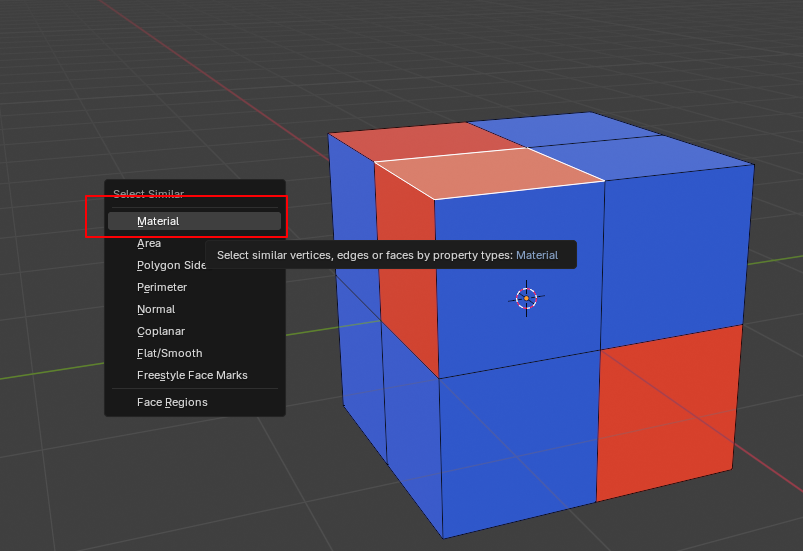
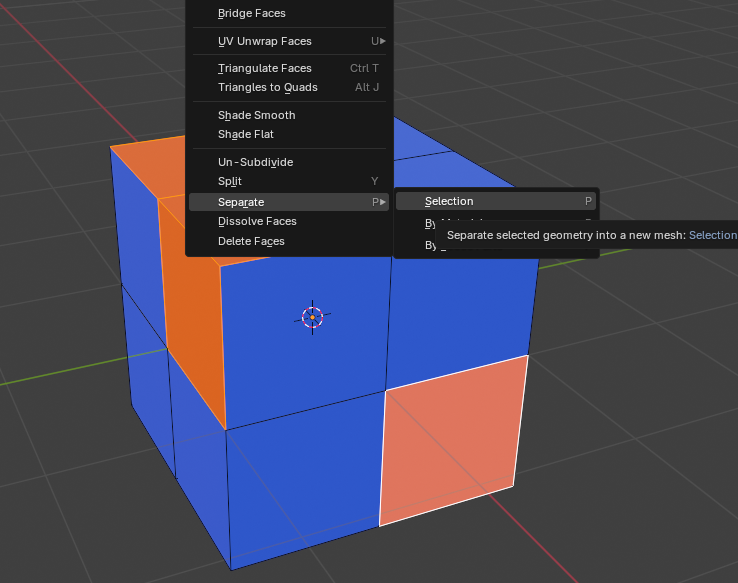

this is a unfinished guide!
ask for help on discordInstall team fortress 2 on steam if you don't already have it(its free!)
Install blender 3.6
Install the source.io blender plugin (if you are a TFVR dev, use mano’s custom source.io if you would want TFVR map materials)
Install plumber blender plugin
Install the contractors Modkit (Basic unreal 4 knowledge is also needed)
Install the datasmith export plugin for blender
Enable datasmith import in unreal
go to the folder where you installed tf2, and browse to tf/maps, here you will find every map in tf2!
First you want to open blender
now, go to file>import>source engine assets>source map .bsp

Now set the world scale to 0.023 and set light power scale to 0.0225 and check rope entities on

Now find your map's bsp

Once its done importing go to the "brushes" collection on the right and delete all the objects in logic, environment and respawn visualizer

Now set the sky camera scale to 16

Select all the objects in static props and hit load entities, make sure to disable bvlg

you should now have all models
by now you will have noticed a lack of sky in the map as there are walls all around you, these are actually the collisions for the map!
We need them so players cant go out of bounds
what we will now do is just click on these walls, go into edit mode, and click on them again, so we select a single face
now you press shift + g and select material

as the walls have a special material, only they will be selected
now you can just press right click and go to seperate->selection
we will use the walls again later, just pretent they arent there for the time being
we're not using seperate by material because it will seperate all materials
Now you need to select all displacement meshes(they are in a collection) and right click and go on shade smooth

now you need to split your meshes UNFINISHED UNFINISHED UNFINISHED!!!
---
Select the skybox and go into wireframe rendering. now, while holding shift, you need to select the skybox camera object and then go to object->transform VMF 3D sky
Run the fixmodelnames script (and if you have mano’s custom source io, also run his clearmaterials.py)
once that is done select all objects in each collection and export them as udatasmith with selected objects only enabled

Still Motivated? Great! were only halfway done.
Open your unreal map and click the datasmith icon

now one by one import each udatasmith file

select your mod and import

Now fix any black materials if you are not using mano’s custom map shaders in the master
this guide is incomplete, further steps are detailed in the original google doc